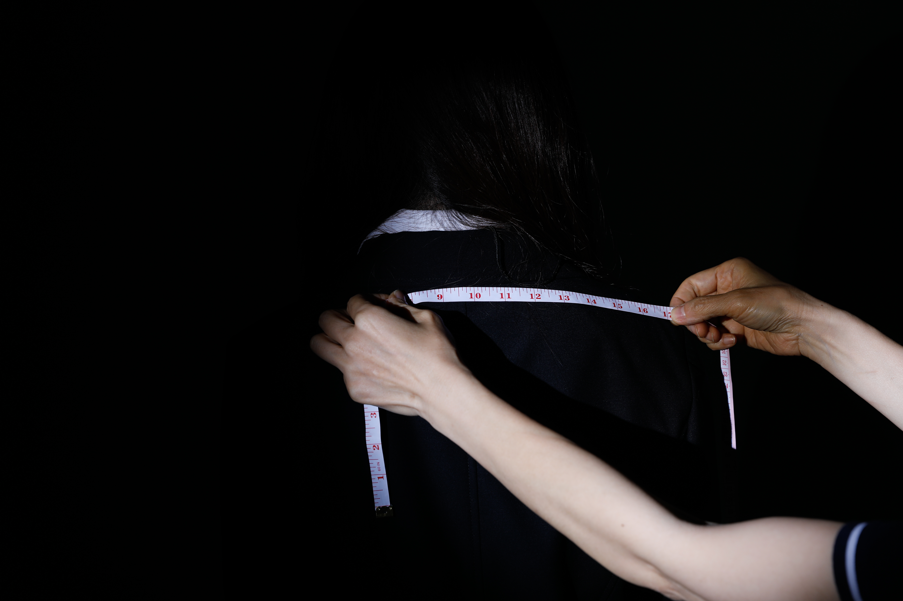

第 01 章
灵感来源与创作陈述
第 02 章
练字围裙与笔墨痕迹
第 03 章
小学书桌与早期规训
第 04 章
日常习题与工具演变
第 05 章
升学备考与方法论系统
第 06 章
海外申请与跨国门槛
第 07 章
模范生肖像与身体规训

蓝底证件照式肖像： 她展现为一个完美学生的形象：从容、聪慧、得体。然而这幅肖像背后却隐匿着无形的统一标准，身体被严谨地定格在规范的光圈之中。
✦ 点击画面或数字按键 1 - 3 切换同一机位心理渐变阶段
同机位三阶段渐变（核心要求）： 光线由明亮的规范肖像转入局部聚光，双手逐渐拽紧领带。同一机位、同一景别之下，内敛的心理张力在静止构图中层层递进（点击画面或数字1-3即可切换查看）。
第 08 章
项目自白与丈量身躯
项目自白
本项目探讨在期望极高的家庭语境中，关怀、庇护与控制之间微妙模糊的边界。它始于一张母亲多年前写下的旧日程表，让我恍然意识到自己的成长在童年时期便已被细致地规划与衡量。这层个人发现引发了我对更广泛学生群体共有经验的反思：在日复一日的课程、考试、补习与截止日期之间，我们被训练去成为家庭、学校与社会所期待的“好学生”。
通过静物摄影，我系统拍摄了自己在不同教育阶段的书桌。课本、笔记、试卷与文具成为了被规划生活的档案切片，展现出学业要求是如何一步步占据日常生活的每一寸空间。随后，我通过校服、规整的体态与摆拍肖像，构建出一个“完美学生”的典型形象。她显得从容而优异，却也隐隐透着一种机械化的造作感，宛如被精心模塑出的标准角色。
“在终极影像中，人物身体步入黑暗。双手收紧领口、调整领带、并用卷尺丈量身躯。测量在此化作评判与标准化的隐喻，揭示出外部的严苛期待如何从书桌案头蔓延并烙印在肉身之上。”
本项目并非旨在否定母爱的温度，而是揭示潜藏于深沉关怀中的复杂性。一份被精密规划的人生或许能够提供遮风挡雨的庇护，却也往往挤压了自我探索与自主成长的空间。透过书桌、制服与被量度身躯的镜头对焦，我意在叩问：当一个女儿被雕琢成无懈可击的模范生时，她未被度量的真实自我，究竟还剩下多少？
